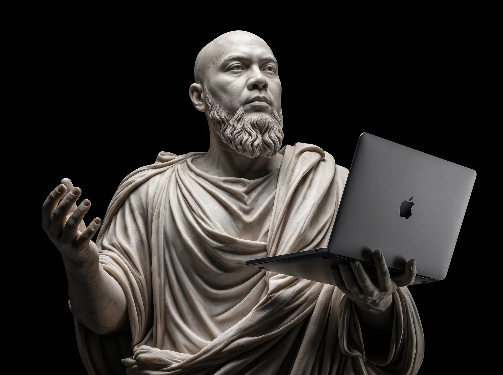
I direct brand content and render it with AI: campaign images, product films and the websites that hold them. Your product, anywhere you can picture it, finished to the standard your brand already expects.
Campaign imagery
Key visuals and full shoots without a set. Products on models, in landscapes, under any light.
Product and brand films
Short cinematic films and social cuts, built shot by shot with a consistent product and cast.
Digital humans
Recurring AI characters who keep their face and style across a whole campaign.
Brand websites
Design, development and content direction for brand flagships, led end to end.
Selected work
9 projects


Reel 2026
Cuts from Ride at Dawn, the E8 film study and the BAODAN cat food film.
Lab
Concepts and tests between projects. Some become campaigns, some just teach me something.
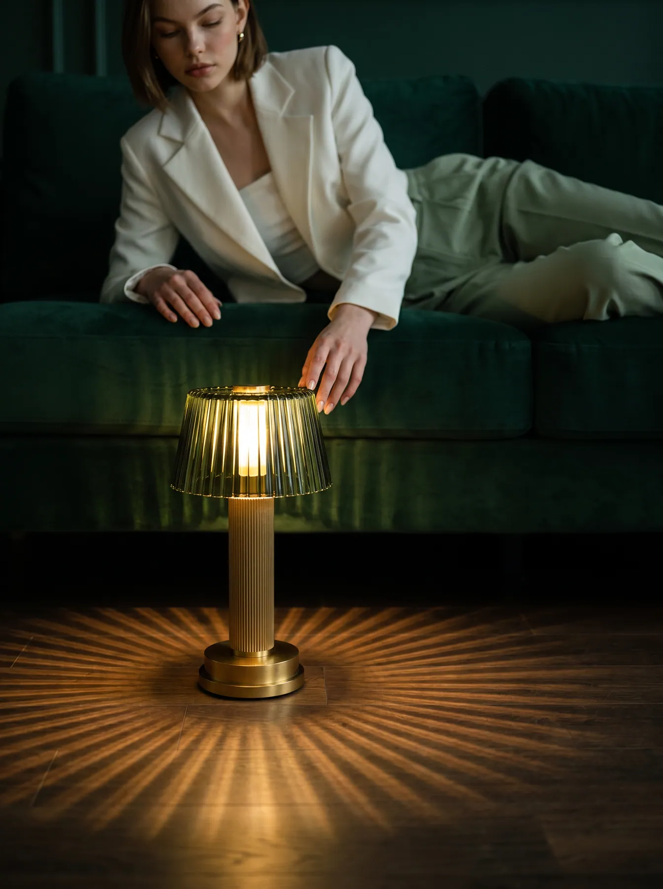
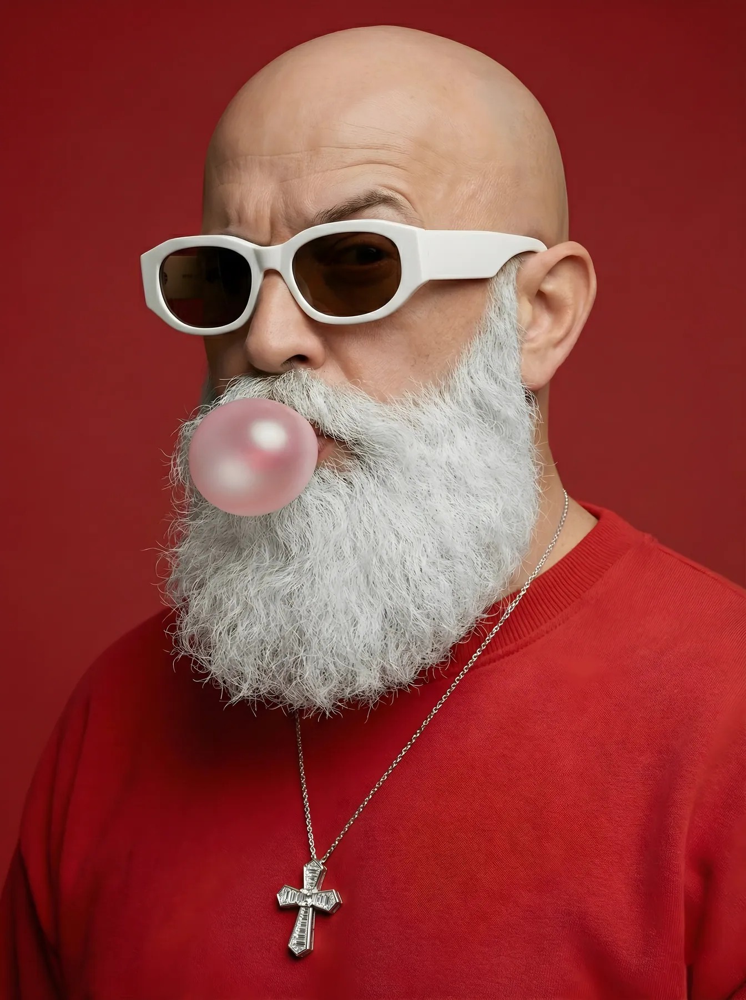
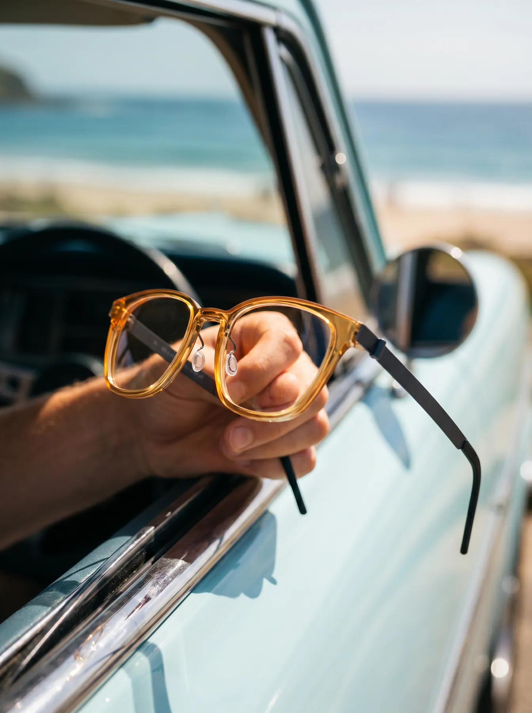
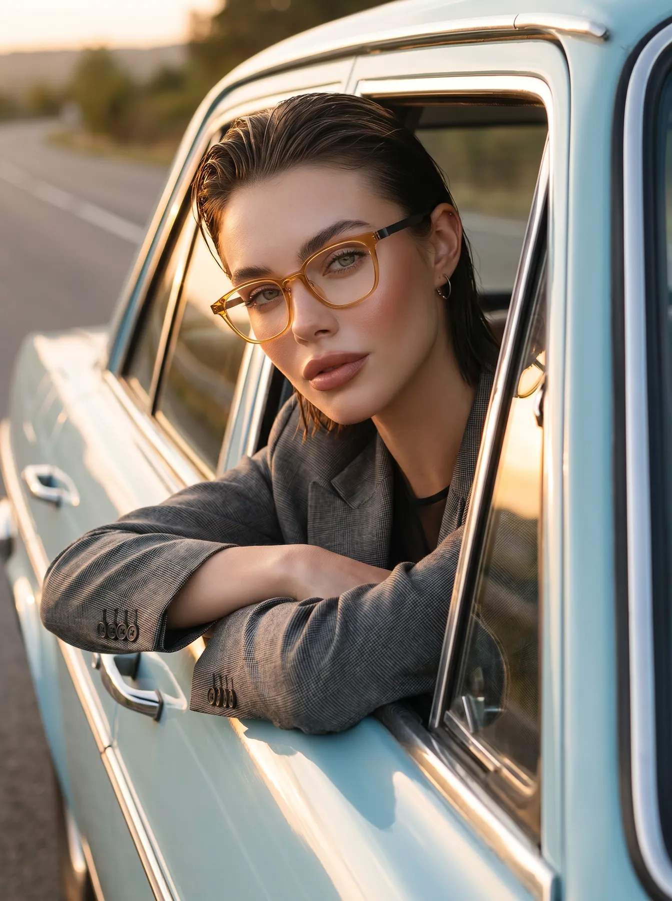
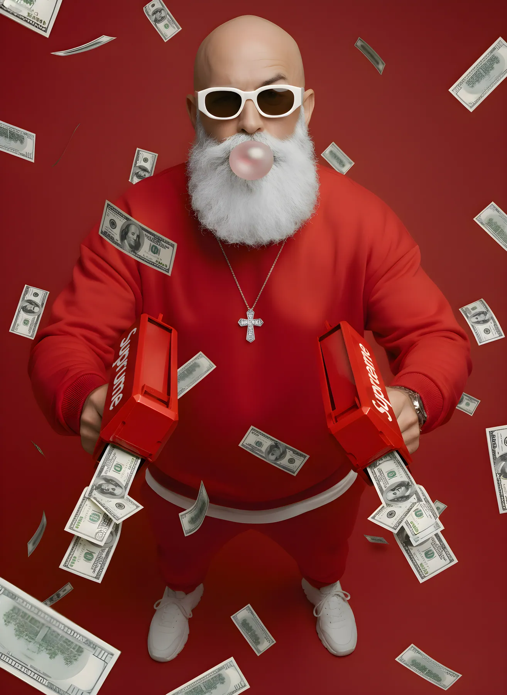
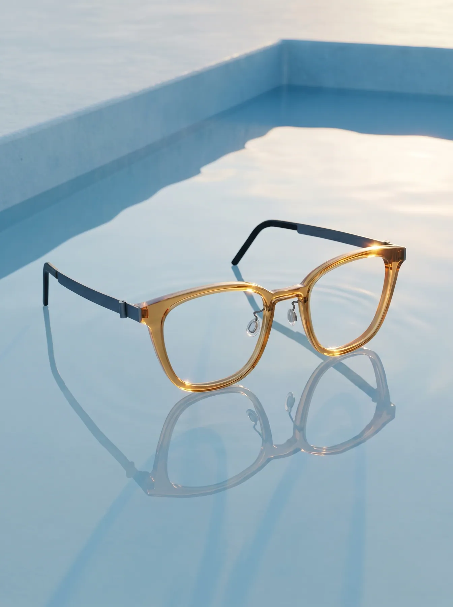
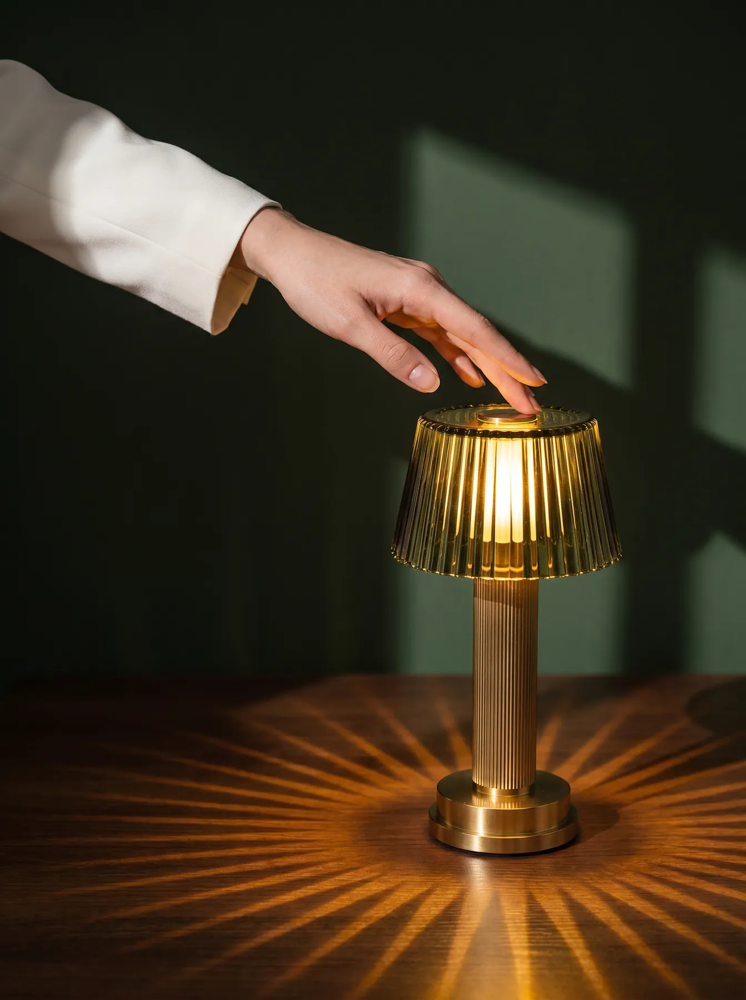
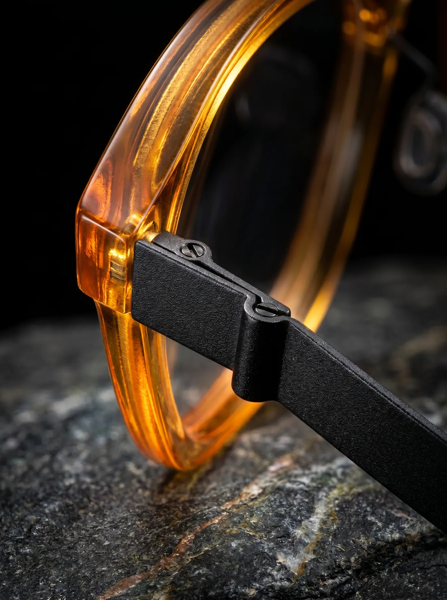
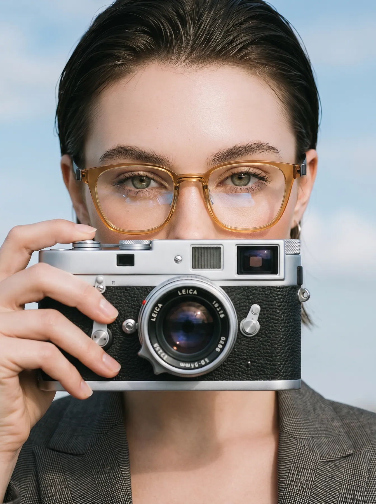
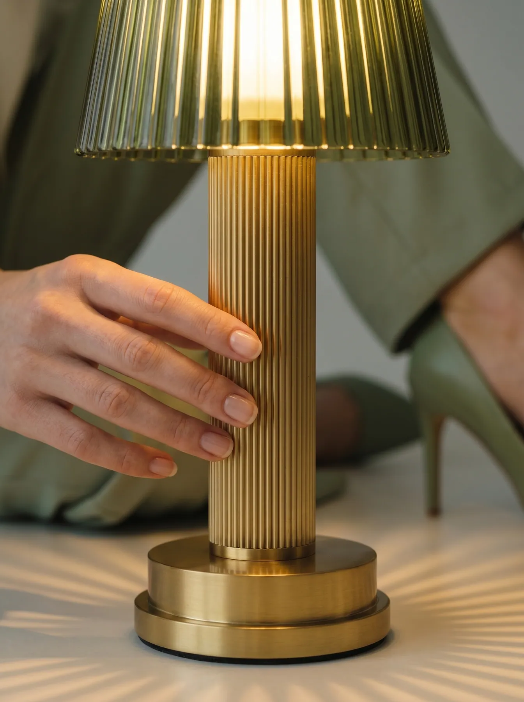
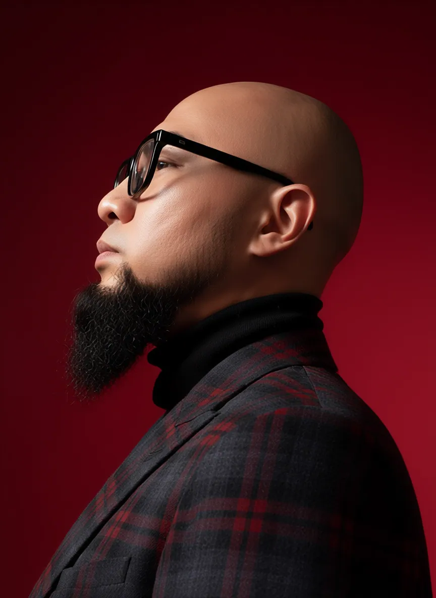
About
STUDIO|BD is run by BD, a brand visual marketer working where social content meets generative AI.
I have led brand design, websites and content for three Shenzhen furniture brands, Huayi Space, Gemrein and Hothing, directing the team that produced them. Alongside client work I run self-initiated studies: an automotive film series, a superbike film and a house brand called BAODAN. They exist to find out what the tools can hold up to before a client needs it.
How a project runs
Brief
We agree the product, the audience and where the brand should feel at home.
World
I design the look: references, light, cast and palette, with a first frame for sign-off.
Render
Images and shots are generated, selected, retouched and graded to match your real product.
Deliver
Finals in every format you need, plus source frames for your team.
Tell me about your brand.
Briefs, questions and collaborations. Find me as @爆蛋BD.